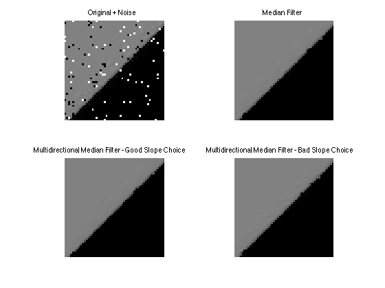
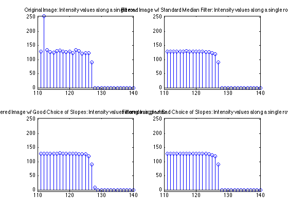

figure(1);
subplot(2,2,1); imshow(orig);
title('Original + Noise')
axis([230 280 230 280])
subplot(2,2,3); imshow(y_correct);
title('Multidirectional Median Filter - Good Slope Choice')
axis([230 280 230 280])
subplot(2,2,2); imshow(y_standard);
title('Median Filter');
axis([230 280 230 280])
subplot(2,2,4); imshow(y_wrong);
title('Multidirectional Median Filter - Bad Slope Choice')
axis([230 280 230 280])
figure(2);
subplot(2,2,1); stem(orig(385, :));
title('Original Image: Intensity values along a single row');
axis([110 140 -5 255]);
subplot(2,2,2); stem(y_standard(385, :));
title('Filtered Image w/ Standard Median Filter: Intensity values along a single row');
axis([110 140 -5 255]);
subplot(2,2,3); stem(y_correct(385, :));
title('Filtered Image w/ Good Choice of Slopes: Intensity values along a single row');
axis([110 140 -5 255]);
subplot(2,2,4); stem(y_wrong(385, :));
title('Filtered Image w/ Bad Choice of Slopes: Intensity values along a single row');
axis([110 140 -5 255]);
 